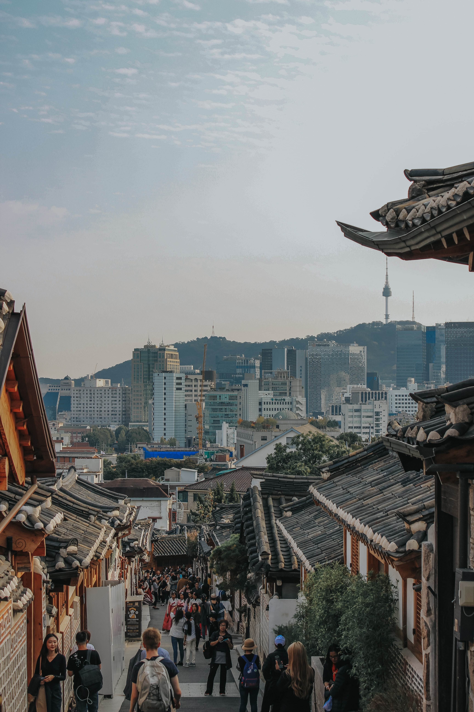
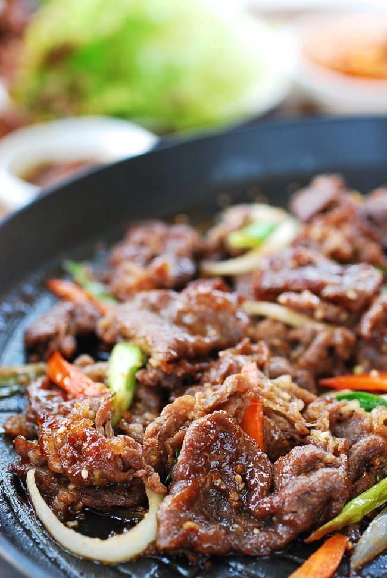

The Republic of Korea is located in East Asia and sits on the southern half of the Korean Peninsula. It shares a land border with North Korea.
Cultural Facts
South Korea is one of the most popular tourist destinations in East Asia. It is a country that is deeply rooted in its traditions and customs. Family is incredibly important in Korean culture and they follow an age hierchy. Religion is practiced freely, with Christianity and Buddhism being two of the most practiced religions there.
Languages
Korean is the official language of South Korea. South Korea is one of the most homogenous countries in the world
Food
Korean food is largely based on rice, vegetables, and meat. Kimchi is the country's national dish, it is a variety of vegetables which are fermented and can be stored for a long time. One of the most popular Korean meat dishes is Bulgogi, a savory dishes of grilled marinated beef. 